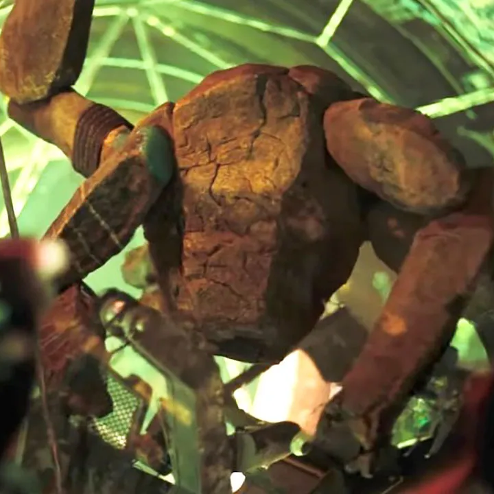
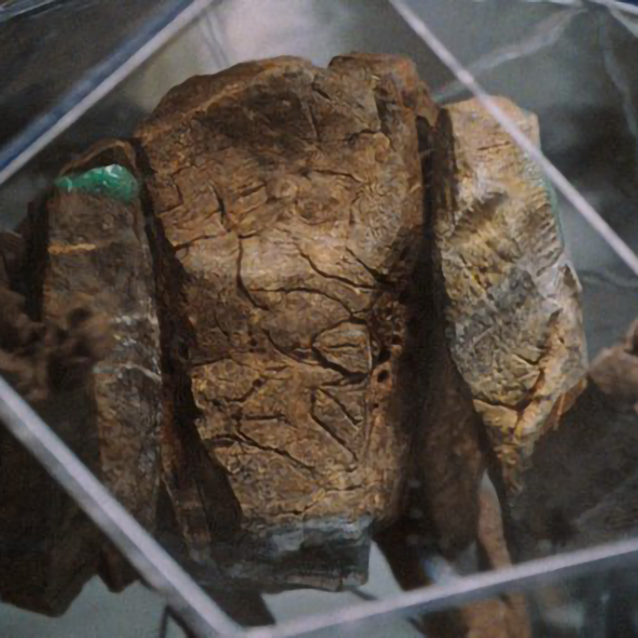
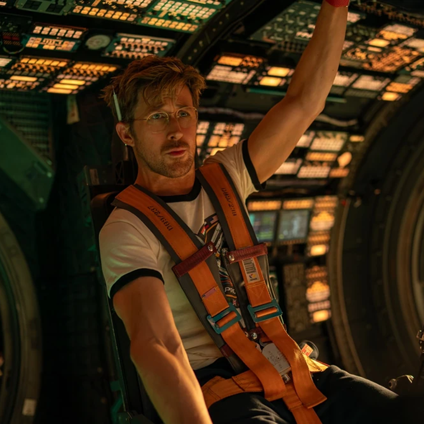

A bit about Rocky



Rocky is a spider-like rock alien from Eird, but don't let his appearance scare you as he's actually really sweet and a good friend. He is mainly known for saving this entire species from the Astrophage diming his star alongside Rylan Grace.
Rocky is an engineer and a very good one at that and he loves making creation to solve problems. He's also a bit of an artist, making intricate xenonite sculptures from his finger tips. Rocky's best friend is Rylan Graces, a human scientist who's really talented in micro biology and consent to have completed the mission without.